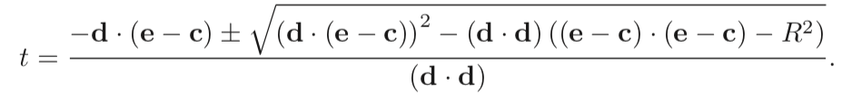
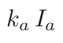
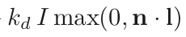
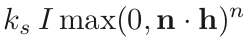
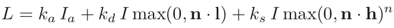

In order to view objects and scenes created in a graphics application, they must be rendered to an image as viewed from a certain viewpoint. The process of rendering can be done in a variety of ways, and these techniques all have their own benefits and shortcomings. Ray-tracing is one of the most simple and effective methods of rendering, and creates images with a high degree of visual realism. High quality comes at a high computational cost, so this approach works well for still-images, but is not particularly suited for real-time applications.
Ray-tracing is an image-order algorithm, which means that it generates the image pixel-by-pixel. For each pixel, a direct line is calculated that starts at the viewpoint and goes through the center of the pixel. This step is referred to as ray generation because the direct lines are actually vectors known as rays.
Once the ray is generated, it can be used to determine which objects in the scene should effect the pixel. Ray-object intersection is the aptly-named process of calculating all of the intersections with objects that occur along the ray. If more than one object intersects the ray, the one that intersects closest to the viewpoint is to chosen. Any objects that do not intersect the ray are ignored, and if no objects intersect the ray, the pixel is set the background color of the scene.
Once it is determined that an object intersects the ray and it is the closest intersection to the viewpoint, the final step is shading. Shading is the process of calculating the color value of the pixel using a chosen shading function. The shading function takes as its input the material properties of the object determined by ray-object intersection, applies some calculations concerning lighting, reflection, shadows, etc., and outputs an RGB color value for the pixel. The shading function we will be using in this tutorial is the Blinn-Phong shading model and is discussed in more detail later on.
Note: This example is for visual purposes. In a real ray-tracer, these steps are done completely for each pixel in turn, whereas this example depicts each step occurring for all pixels, then going to the next step.
The basic algorithm for ray-tracing is as follows:
for each pixel:
compute viewing ray
find first object hit by the ray and the surface normal at that point
compute pixel color using object color, light, and surface normal
The process of computing viewing rays is fairly simple. Previously, we said that rays are simply vectors, but this isn't exactly true. Vectors have a magnitude and direction, but they have no concept of an origin point. Rays need to have an origin point (the viewpoint for our purposes) and a direction. In practice, these are both usually represented as their own vectors, one for the origin point and one for the direction. Magnitude is not a factor of rays because they extend infinitely.
There are different kinds of views that can be used to produce an image. We will use perspective view because it is one of the most common, and easiest to understand. Essentially, a perspective view means that all rays have the same origin (the viewpoint). For most renderings, the viewpoint is given as a parameter, so we do not have to calculate it ourselves.
Now that have determined the origin for our rays, we just need to calculate their directions. To do this, we need the coordinates of the current pixel, translated to UV coordinates (position in world space). This assumes that we have the dimensions of our image plane (top, bottom, left, right), and our resolution (W x H). With this information the UV coordinates of the pixel with coordinates (i, j) can be calculated as so:
u = left + (right − left) * (i + 0.5) / W
v = bottom + (top − bottom) * (j + 0.5) / H
With the UV coordinates calculated, theres just one last step to compute the ray's direction. For this step we need the distance between the viewpoint and image plane, represented as d, and the 3 basis vectors for our scene. These are usually given, so don't worry about having to calculate them. With d, our 3 basis vectors u, v, w, and our UV coordinates calculated in the last step, the ray's direction can be computed as so:
direction = -dw + uu + vv
With our ray computed, we now have to see if it hits any objects in our scene. We will be using the ray in the following form:
e + td
where e is the vector representing the ray's origin, and d is the vector representing the ray's direction. t is the time along the ray where the intersection occurs.
An important thing to note is that different types of objects require different formulas to determine if and where an intersection occurs with it. We will discuss ray-sphere intersection in this tutorial, but other shapes and objects will not work with these formulas.
Given a sphere with radius R and center c, the time(s) t along the ray where the sphere intersects is given by:
You might have noticed that this is a quadratic equations and may produce two seperate results. If there are two results, then the ray entered the sphere at one t and exited at the other. We want the t that is closest to the viewpoint (the lesser of the two). If there is exactly 1 result, the ray grazes the sphere, touching it at only one point. If there are no results, then the ray and sphere do not intersect at all.
Once we determine the closest object intersected by the ray, we save the object's material properties and surface normal at the point of intersection. This information will be used in the shader.
Note: The term under the square root sign is referred to as the discriminant. This can be used to determine if there are any results prior to calculating the entire equation. If the discriminant is undefined, then there are no intersections and we can move one without attempting to calculate t values.
With the material properties and surface normal of the intersected object determined, we can plug these values into a shading model to produce our pixel color. As mentioned earlier, we will be using the Blinn-Phong shading model. This model adds 3 types of color together to produce the final color for the pixel: ambient, diffuse, and specular. Each type deals with a different kind of light that can illuminate the objects.
Ambient: Assumes there is equal light coming from every direction (ensures that surfaces receiving no actual light are not colored completely black):
k represents the color of the object, and I represents the color of ambient light (usually a neutral like white)
Diffuse: Light from a light source in the scene
k represents the color of the object, I is the color of the light source, and max(0, n·l) determines the amount of light the object is receiving at the point of intersection. The dot product of the surface normal n and the light vector l approximates the angle between the two. The higher the value of the dot product, the more light the surface receives.
Specular: Incorporates a "shininess" component to simulate different types of material (matte finishes vs. glossy)
k represents the color of the object, I is the color of the light source, and max(0, n·h) determines the amount of light the object is reflecting back toward the viewpoint. The dot product of the surface normal n and the halfway vector h approximates the angle between the two. The higher the value of the dot product, the more light is reflected toward the viewpoint. The value of this dot product is raised to the "shininess" exponent n. Higher values of n correspond to glossier surfaces.
Adding all of these components together produces our complete shading model:
After determining the object that intersected the ray closest to the viewpoint, we simply plug in the values of the object's material properties and the result produced by our shading model is what we set the pixel color to.
Note: Since we are using RGB color values, we actually have to calculate our shading model seperately for each color channel (R, G, and B), then sum the results of each channel to produce the final color.
You are now a master ray-tracer! With this technique, you can produce high-quality images of almost any scene you can imagine. Good luck on your ray-tracing journey, and don't forget to take the quiz!
Answer the following questions based on your knowledge of ray-tracing from this tutorial.